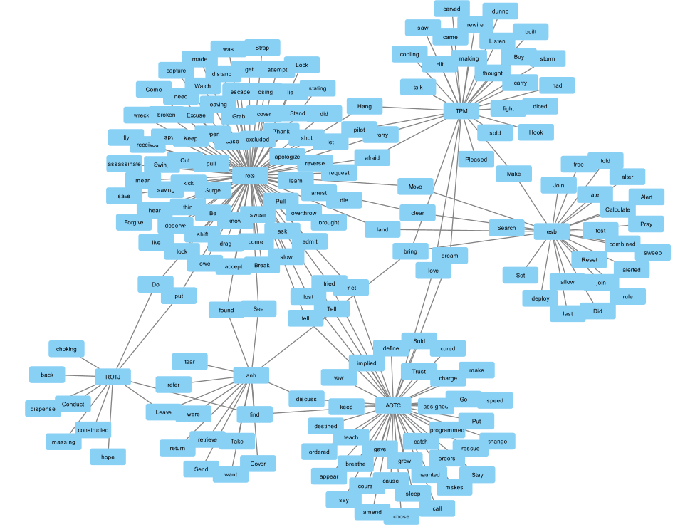

This graph depicts the usage of verbs in speeches spoken by Anakin Skywalker or Darth Vader through the original and prequel trilogies. The main goal with this graph was to document verbs in an attempt to visualize Anakins transformation into Darth Vader. In The Phantom Menace the most important verbs shown are Buy and Sold. This refers to Anakin's childhood as a slave, and being unable to buy Anakins mother out of slavery. These are major factors that shape Anakin's character and his strong desire to help his friends and family. In The Attack of the Clones the most important verbs found are Dream, Vow, and haunted, these verbs show Anakin's struggle with his attachments. The verb Dream refers to Anakin's recurring dreams of his mother's death. Ths also foreshadows his eventual dreams of Padme's death which is the main cause of Anakin's turn to the darkside. The verb Vow refers to Anakin vowing to never let anyone close to him die, This comes after the death of Anakin's mother. This is important because Anakin's desire to prevent death is the main thing that Palpatine uses to turn him to the darkside. The verb haunted refers to Anankin's fears of losing padme, and shows his struggle with attachments which Jedi should never have. This again is another reason Anakin turns to the darkside. In Revenge Of The Sith the most important verbs are Die, Exclude, and Overthrow. The verb die refers to a conversation between Anakin and Padme where he tells her about a dream where she dies in childbirth. This again shows Anakin's main reason for turning to the darkside in an attempt to save padme. The Verbs Exclude refers to a conversation between Anakin and Palpatine where Anakin tells him that he feels like the jedi council is excluding and hiding things from him. Throughout the conversation Palpatine tells Anakin that the council does not trust him and that he can teach him about the darkside. This culminates In Palpatine revealing he is a Sith Lord. This conversation shows Anakins growing distrust in the Jedi and his desire to join the darkside. The verb Overthrow refers to a conversation between Anakin and Padme where he tells Padme can overthrow Palpatine and they can rule the galaxy together. At this point in the movie Anakin has fully embraced the darkside and has become Darth Vader, and we see that he no longer cares about saving padme he only cares about power. Anakin talking about overthrowing Palpatine is also the same thing that he would tell Luke as Darth Vader. Throughout the Original trilogy Darth Vader plays a smaller part so naturally there are less verbs to look at. The verbs in the original trilogy don't show much about Darth Vader until Empire Strikes Back. In the movie Vader says verbs like join, and Combined. This verb shows Vader's attempts to get Luke to join the darkside and overthrow the emperor with him. In Return Of The Jedi the most important verb is leave. After Vader's sacrifice and redemption at the end of the movie he tells luke that he has saved him and he tells Luke to leave. This scene is the culmination of Anakin's redemption and return to the lightside.
This graph shows verbs found in stage directions where either Anakin or Vader appear alongside the word Lightsaber. This was done in an attempt to graph the differences in the lightsaber duels in the Prequel trilogy and the Original trilogy. I picked Anakin and Vader for two reasons, one was to go along with the speech graph above and the second is that Anakin is involved in a majority of the duels in the prequels and Vader is involved in all the duels in the Originals. The graph is set up with verbs associated with anakin representing the prequels trilogy and the verbs associated with Vader representing the Original trilogy. In the graph for Anakin you can see verbs like rush, circle, swing, and parries. These verbs depict a fast paced and energetic style to the duels. These verbs are in contrast with verbs from the original trilogy such as stand, ponder, and stalk. These verbs represent a slower paced and methodical style of duels. One of the verbs that is tagged for both trilogies is Hand, which refers to the numerous times someone gets their Hand cut off in a duel. One of the main issues with the graph is that there was no way to distinguish when there was a stage direction with an actual duel or when a lightsaber is simply mentioned. Another issue is there are numerous false tags such as count, which is not a verb and is actually referring to the character Count Dooku.